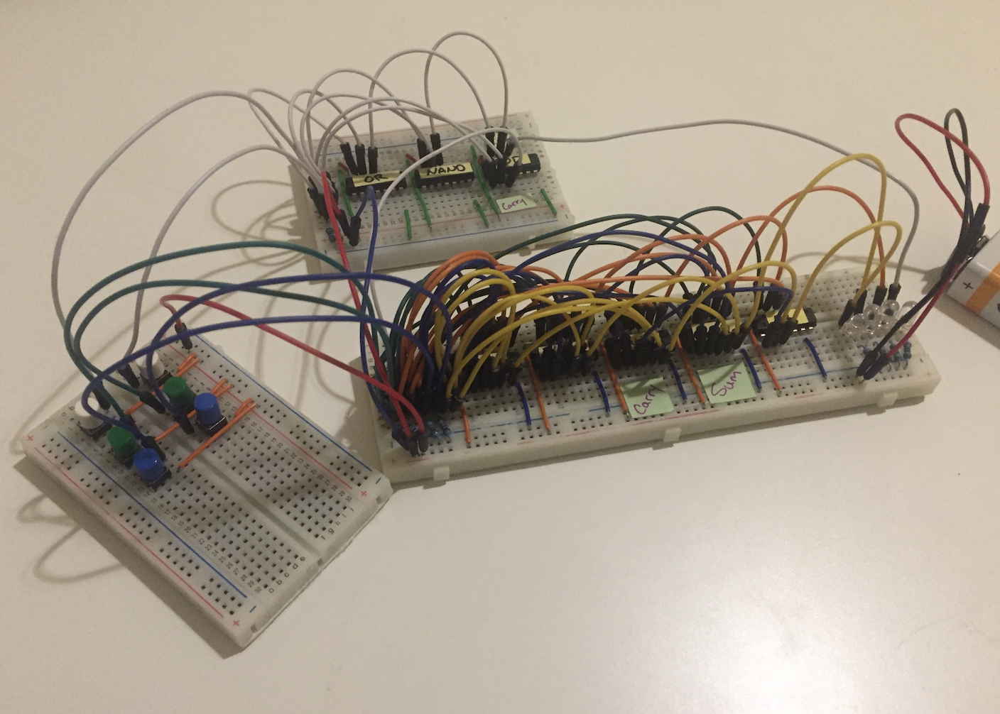

What is the goal of this project?
Long Term: Build a computer!
Short Term:
- Build a calculator out of wires.
- Build a calculator out of logic gates.
Context
When I teach circuits, I like to start out by just letting the students play around with the equiptment. To make it interesting, I ask them to build simple logic gates - AND, OR, and NOT. I started to wonder how hard it would be to make a half adder using the simple tools.
What tools did I use?
Kept it simple! Wires, LEDs, switches, glue, solder, batteries.
Introduction
I like calculators, especially my trusty TI-89. But the calculators I use are really complicated, and I wondered what they would look like stripped down to their most basic parts.
The Simplest Calculator
My first calculator is built from wire, LEDs, switches, resistors, and batteries. It can add up to two.
The calculator has two "buttons", one blue and one green. Because of the limitations of the hardware, each button is made of three smaller that must be pressed together.
The calculator is designed to light up the first LED if both buttons are pressed, and the second if only one button is pressed. If you think of the blue button as representing the first number, and the green button as the second, the possibilities are:
- 0 + 0 = 0 (no lights turn on)
- 1 + 0 = 1 (the 'one' light turns on)
- 0 + 1 = 1 (the 'one' light turns on)
- 1 + 1 = 2 (the 'two' light turns on)
0 + 0 = 0
No button pressed. No LED turns on. Boring.
1 + 1 = 2
The two buttons on the green loop are placed in series. That ensures that only when both buttons are pressed will the loop complete and the LED turn on. You may recognize this as an AND gate: true if A and B are pressed, false otherwise.
1 + 0 = 1 and 0 + 1 = 1
The two buttons on the yellow loop are placed in parallel. That way if either of the two buttons is pressed the light will turn on, even if the other button isn't pressed. This makes an OR gate, true if A or B or both are pressed.
That 'or both' is the tricky part of this step, and the reason behind the red loop. Without it, if you press both buttons both green and yellow circuits are completed and both lights turn on. That would correspond to 1 + 1 = 3!
The red loop completes a short circuit in the yellow loop when both buttons are pressed, preventing that LED from lighting up. It creates the NOT AND part of this circuit.
Summary
These three components make up a half-adder. It's great for adding the 1s digits, but not good enough for a 10s digit because there's no place for a carry in. But I'm getting ahead of myself.
Adding to 14
A buttons-only calculator had severe limitations. We would like to press just one button instead of three, and have that one button control the three loops. Even better, we would like to have some way to have the outpus of one calculation (which light bulb turns on) affect the inputs of another (which buttons we press) so we can combine calculations to get numbers greater than two.
Behold the transistor, fundamental building block of modern electronics. They even come pre-assembled into logic gates for us, which means I can build a calculator that adds up to 14 with only 40-or-so wires.
The board to the left is the input-pad with two rows of buttons. White buttons are "1", green buttons are "2", and blue buttons are "4", meaning the largest number you can make is 1+2+4 = 7, by pressing all of the buttons at once. Press all six buttons and you get 7 + 7 = 14, the largest number this calculator can add to.
The white circuit at the top is a half adder. It is a slightly neater implementation of the circuit I built at the top of the page, with the benefit of each input being just one button and the outputs being electric signals rather than LEDs.
The large bird's nest at the center is the two full adders that allow us to add past two. And on the far right you can just make out four LEDS that represent a four-digit binary number. I did make a binary-to-digital decoder (pictured below) but it has since been scrapped for parts.